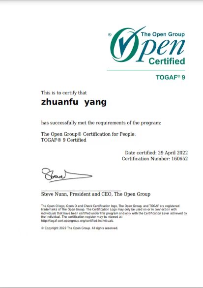
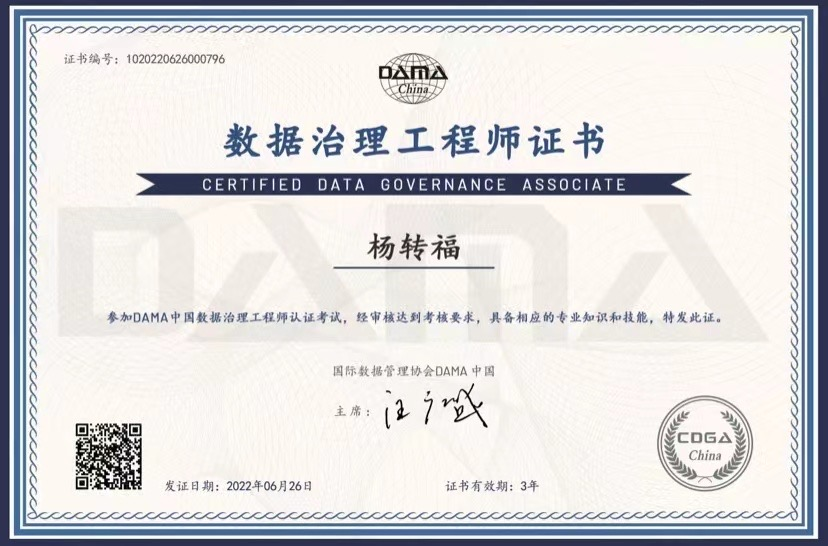
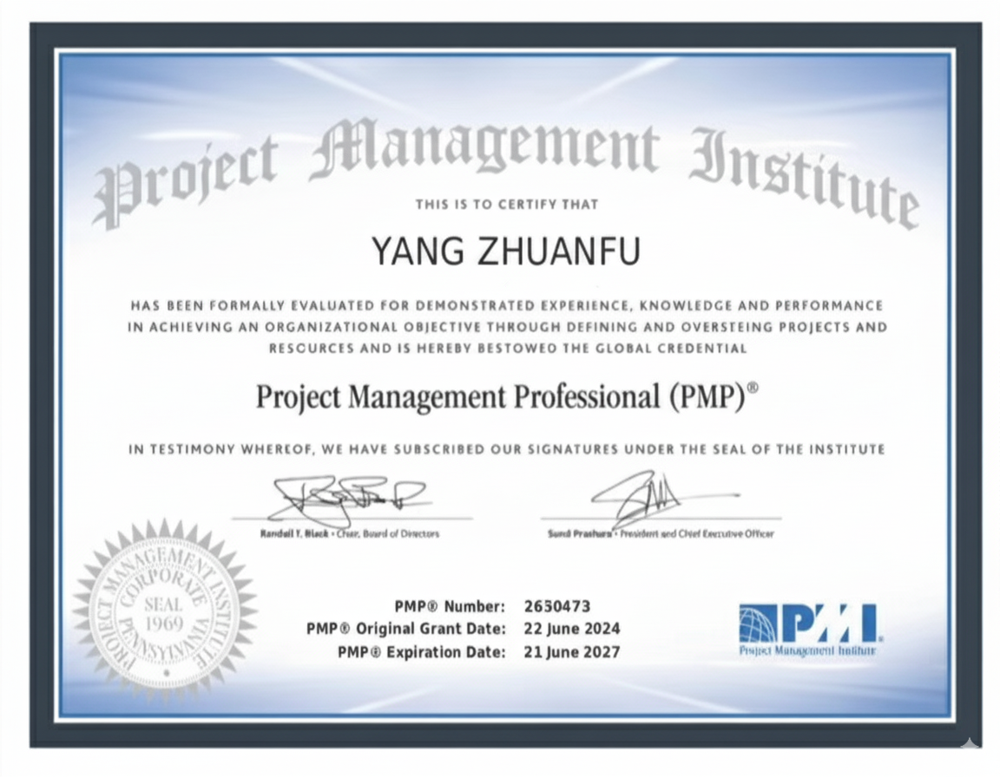
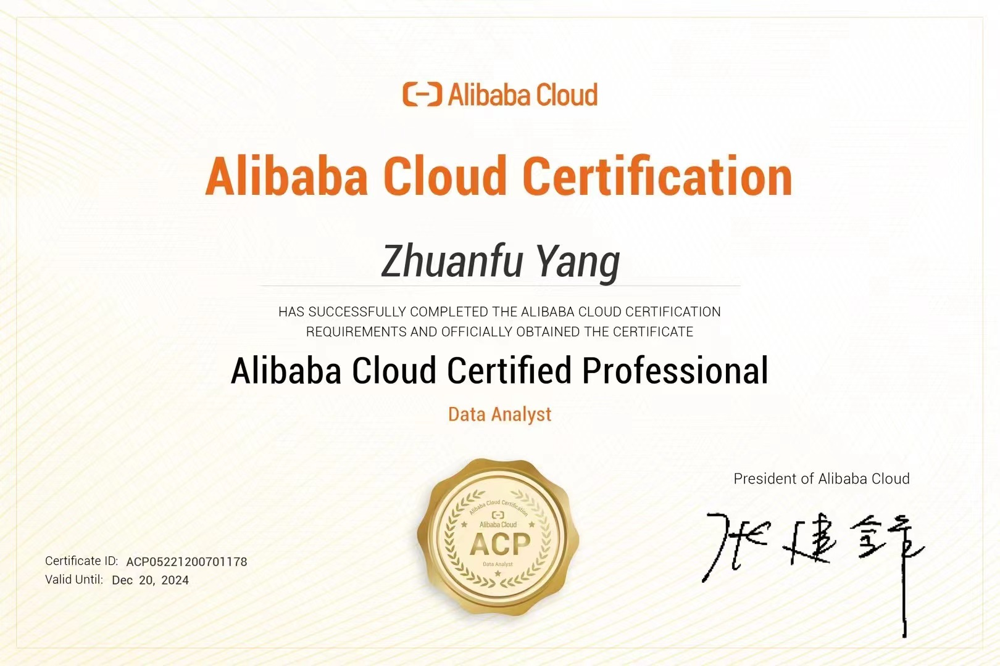

AI ERA PERSONAL OPERATING SYSTEM
杨转福 Zhuanfu Yang · 企业与个人转型推动者
赋能企业和个人转型升级
终身学习 · 拥抱变化 · 成人达己 · 永远好奇
AI 大模型解决方案架构师 · 11年+数字化转型实战 · 用行业方法、数据资产与智能能力完成组织升级
My OS — 认知操作系统
不展示"我是谁"，而是让你体验"我怎么思考"
认知内核
"用业务语言定义问题，用数据资产沉淀能力，用 AI 放大组织效率。"
🔥 FIRE 模型
企业 AI 场景评估
Frequency × Intelligence × Readiness × Effect
四个维度，量化评估业务场景是否适合用 AI 大模型落地。
🔄 TURN 模型
个人 AI 转型评估
Think × Use × Ready × Next
四个维度，评估个人 AI 转型就绪度，"转"从认知到行动。
📊 落地路径论
先治理 → 再中台 → 后智能
数据质量不行，AI 再强也白搭。先把数据基础打好，再逐层构建智能能力。
🎯 价值验证论
以可度量的业务指标验证方案价值
不停留在概念层面，坚持用 ROI 说话，让每个项目成果可衡量、可对比。
Playground — 能力演武场
不让你"想象"我能做什么，让你"直接体验"
🔥 FIRE 场景评估器
维度评分
🔄 TURN 个人 AI 转型评估
维度评分
Thinking Feed — 思想流
精选观点，来自公众号「转见未来」
AI 场景落地的第一性原理
不是"AI能做什么"，而是"业务痛点是什么"。从痛点出发，才能找到真正有价值的AI应用场景。
数据治理不是技术项目
数据治理的本质是组织治理。技术只是工具，关键是建立数据标准、明确数据责任、形成持续运营机制。
先治理、再中台、后智能
很多企业想一步到位上AI，但数据基础不牢。正确的路径是：先把数据理清楚，再建中台沉淀能力，最后用AI放大效率。
AI 时代的个人护城河
技能会被AI平替，但思维方式不能。你的认知源代码——如何定义问题、如何做决策、如何整合资源——才是不可替代的。
FIRE 模型：四维评估法
频次×适配×就绪×效果，用这四个维度快速判断一个AI场景值不值得做、能不能做、效果好不好量化。
指标口径统一是经营分析的基石
如果"收入"在不同部门有不同的计算方式，再好的BI系统也产出不了可信的分析结果。先统一口径，再谈分析。
Proof of Work — 可验证的经历
不是"相信我"，而是"来查我"
能力 × 行业矩阵
| 汽车 | 装备制造 | 消费品 | 政企 | |
|---|---|---|---|---|
| 转型规划 | ● | ● | ● | ● |
| 数据中台/治理 | ● | ● | ● | ○ |
| AI 大模型应用 | ● | ● | ○ | ○ |
| 方案/交付 | ● | ● | ● | ● |
职业轨迹
滴普科技 · AI 和大数据解决方案
面向企业数据智能和AI大模型应用，围绕数据湖、数据中台、数据治理、经营分析与智能化场景提供咨询与方案支撑。
中软国际 · 数字化转型咨询与交付
深入参与企业架构规划、需求分析、招投标支持和项目实施。
长安福特、猪八戒网、平安等企业
积累制造业、平台型业务和综合型组织的跨行业视角。
重庆大学 MBA（在读）
从经营管理、组织协同与商业创新视角继续补强。
专业认证

TOGAF 企业架构师
体系化方法支撑复杂企业转型规划

DAMA-CDGA 数据治理
数据标准、质量与治理体系建设

PMP 项目管理师
跨团队协同与结果导向的项目推进

阿里云 ACP 数据分析
云上数据分析与大数据技术应用
Interface — 智能联系
带着你的意图来，我帮你找到最快路径
💬 交流探讨
关于数字化转型、数据治理、AI应用的话题，欢迎关注公众号交流。
公众号二维码